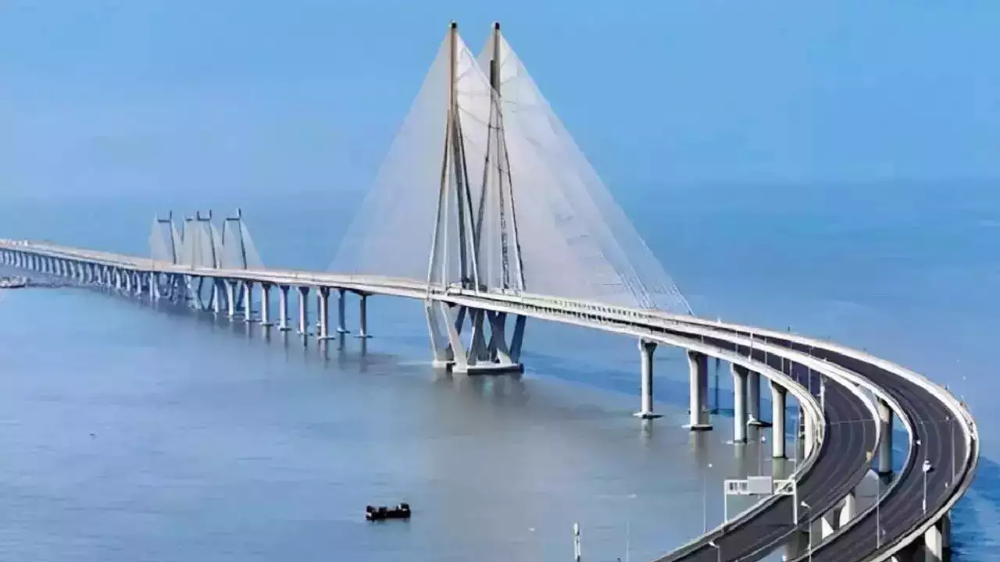
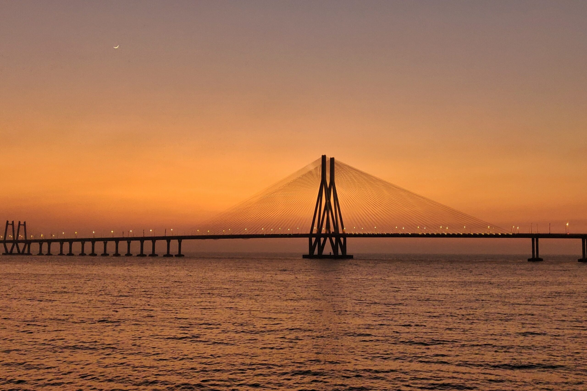
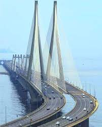

Bandra-Worli Sea Link




🌉 Introduction
The Bandra-Worli Sea Link is one of Mumbai's most iconic landmarks, connecting Bandra in the Western suburbs to Worli in South Mumbai. It’s a stunning cable-stayed bridge known for its architectural beauty and sea-facing drive.
📜 History
Commissioned in 2009, the Sea Link was built to reduce traffic congestion between the suburbs and the city. It spans 5.6 kilometers and took nearly 10 years to complete, becoming a symbol of modern infrastructure in Mumbai.
🕒 Best Time to Visit
- Evenings for night views with lights
- Early morning drives for sunrise
- October to March for pleasant weather
📸 Things to See
- Stunning views of the Arabian Sea
- Bridge lights during night
- Photo opportunities from Bandra Fort
- Sunsets from the Bandra promenade